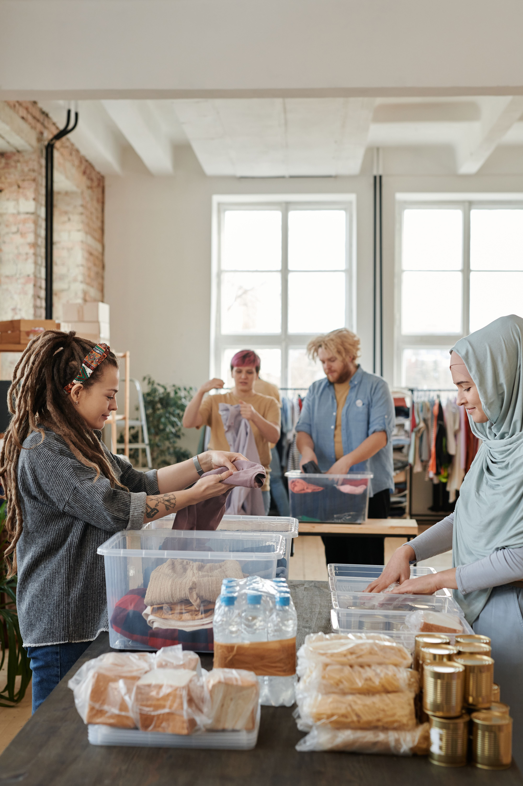
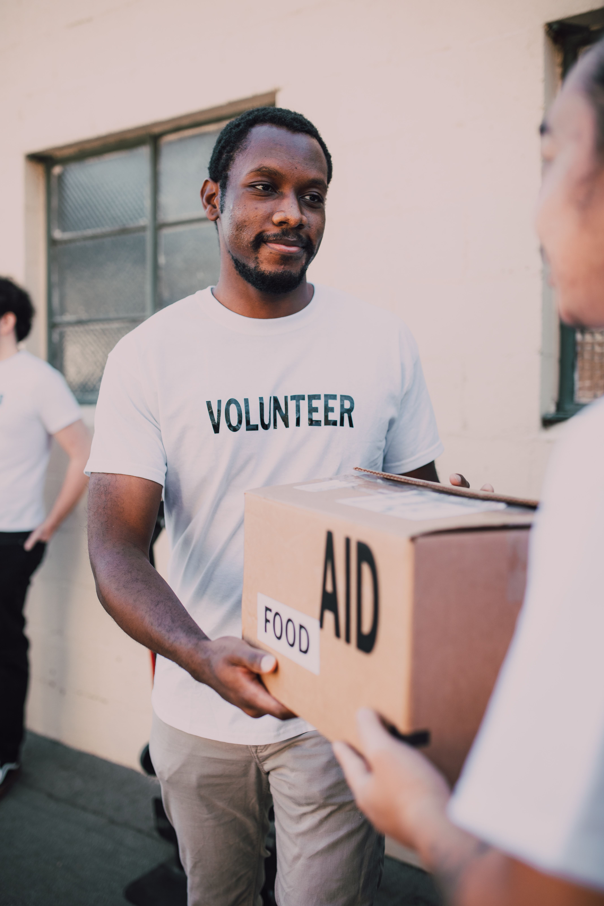
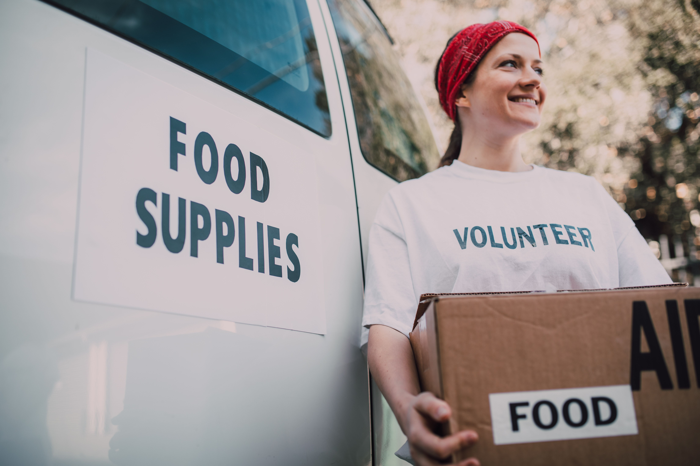

Our Mission
To connect high school learners with accessible community service opportunities while encouraging young people to give back to their communities.
Connecting Learners, Building Communities

Community Connect SA is a non-profit initiative that connects South African high school learners with meaningful community service opportunities.
We help learners discover ways to make a difference while gaining experience, developing new skills and contributing to the spirit of ubuntu.
Our platform connects learners with charities, schools, hospitals, animal shelters, libraries, environmental organisations and other community organisations.
To connect high school learners with accessible community service opportunities while encouraging young people to give back to their communities.
To become a trusted South African platform where every learner can discover opportunities to contribute positively to their community.
We aim to connect learners with verified organisations and reliable opportunities.
We want community service opportunities to be accessible to learners and schools.
We put South African communities and their needs at the centre of our work.
We encourage age-appropriate activities, responsible participation and proper supervision of learners.
Community service helps learners develop empathy, responsibility and leadership.
The people behind our mission to connect learners with opportunities to make a difference.

Programme Management
Coordinates community service programmes and helps ensure opportunities support the needs of learners and communities.

Learner Support
Helps learners explore suitable volunteering opportunities and understand the requirements for participation.

Community Partnerships
Builds relationships with community organisations and encourages collaboration across South Africa.
Explore community service opportunities and discover how you can help build stronger communities.
Explore Opportunities